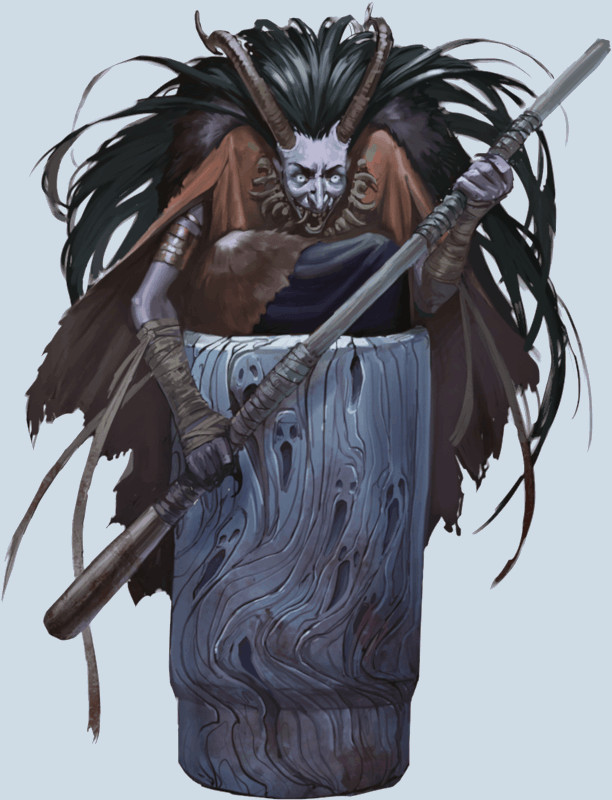

Mortier et Pilon de Baba Yaga
Objet merveilleux, artéfact (nécessite un lien)
Les créations de l'immortelle Baba Yaga défient les lois de la magie des mortels. Parmi les équipements célèbres qui font sa légende dans d'innombrables mondes, il y a les artéfacts qui la propulse à travers les plans : le Mortier et le Pillon de Baba Yaga. Ces outils emblématiques de Baba Yaga sont considérés comme un artefact unique pour ce qui est du lien. Si le pilon venait à être séparé du mortier, il réapparaîtrait à côté de celui-ci à l'aube suivante.
Propriétés aléatoires. Cet artefact possède un certain nombre de propriétés déterminées aléatoirement :
• 2 propriétés bénéfiques mineures
• 1 propriété bénéfique majeure
• 1 propriété néfaste mineure
Propriétés du Mortier. Le mortier est un bol en bois de taille TP. Cependant, sa taille grossit pour s'adapter à ce tout ce que vous y mettez dedans, jusqu'à – s'il y a suffisamment d'espace – une taille G, ce qui signifie qu'il peut contenir une créature de taille G.
Propriétés du Pilon. Le pilon est un outil en bois usé de 15 cm de long. Une fois à chacun de vos tours, si vous tenez le pilon, vous pouvez lui donner la taille d'un bâton ou bien le réduire de nouveau en un pilon (aucune action requise). Sous forme de bâton, le pilon est une arme magique qui donne un bonus de +3 aux jets d'attaque et de dégâts. Le pilon a 12 charges. Lorsque vous touchez avec une attaque au corps à corps en utilisant le pilon, vous pouvez dépenser jusqu'à 3 de ces charges pour infliger 1d8 dégâts de force supplémentaires par charge dépensée. Le pilon récupère toutes les charges dépensées chaque jour à l'aube.
Outils parfaits. Lorsque que vous tenez le pilon et le mortier, vous pouvez utiliser votre action pour prononcer le nom de n'importe quel minéral, plante ou liquide, et une quantité de ce matériau pour une valeur de 10 po ou moins. Le mortier se remplit instantanément avec la quantité désirée de ce matériau. Une fois que vous avez utilisé cette action, vous ne pouvez l'utiliser de nouveau avant d'avoir terminer un repos court ou long. Vous pouvez aussi utiliser cet artefact comme matériel d'alchimiste, matériel de brasseur, ustensiles de cuisine, kit d'herboriste et kit d'empoisonneur. Vous avez un avantage à tousles jets de caractéristique effectués en utilisant cet artefact comme un de ces outils.
Éléments primordiaux. Lorsque le mortier et le pilon sont à 1,50 mètre ou moins de vous, vous pouvez utiliser votre action pour lui ordonner de moudre. Durant la prochaine minute, ou jusqu'à ce que vous utilisiez votre action pour lui ordonner verbalement d'arrêter, le pilon bouge sur lui-même, réduisant le contenu du mortier en une poudre ou une pâte utilisable aussi bien pour la cuisine que pour l'alchimie. Au début de chacun de vos tours, ce que contient le mortier subit 4d10 dégâts de force. Si les points de vie de la cible sont réduits à 0, elle est réduite en poudre, en bouillie ou en pâte, selon sa nature. Seuls les objets magiques ne sont pas affectés. Si vous le souhaitez, lorsque le pilon s'arrête, le mortier peut séparer son contenu – comme des os en poudre, des herbes écrasées ou des organes en bouillie – en des tas distincts.
Traverser la nuit. Si vous tenez le pilon lorsque vous êtes dans le mortier, vous pouvez utiliser votre action pour ordonner verbalement au mortier de voyager jusqu'à un lieu ou une créature définis. Vous n'avez pas besoin de savoir où se trouve votre destination, mais elle doit être identifiée précisément – et non simplement « la rivière la plus proche » ou « l'antre d'un dragon rouge ». Si la destination spécifiée est à moins de 1500 kilomètres de vous, le mortier s'élève dans les airs et disparaît. Vous et toute autre créature présente dans le mortier voyagez dans un ciel onirique, avec les reflets brumeux du monde défilant en-dessous de vous. Des créatures pourraient voir votre image laissant des traînées entre votre point de départ et votre destination. Vous arrivez à destination 1 heure plus tard, ou 1 minute plus tard s'il fait nuit.
Les os connaissent leur foyer. Lorsque vous ordonnez au mortier de voyager, vous pouvez aussi jeter de la poudre, de la pâte ou toute chose de moulue par le mortier et nommer un endroit sur un autre plan d'existence ou sur un autre monde du plan matériel. Si le matériau jeté a été obtenu à partir d'une créature native de ce plan ou de ce monde, le mortier voyage à travers un ciel nocturne et vide jusqu'à un emplacement inoccupé de cette destination, en 1 minute.
Détruire le Mortier et le Pillon. Le mortier et le pilon sont détruits s'ils sont écrasés par les pieds de la Cabane dansante de Baba Yaga ou par Baba Yaga elle-même.
Propriétés aléatoires. Cet artefact possède un certain nombre de propriétés déterminées aléatoirement :
• 2 propriétés bénéfiques mineures
• 1 propriété bénéfique majeure
• 1 propriété néfaste mineure
Propriétés du Mortier. Le mortier est un bol en bois de taille TP. Cependant, sa taille grossit pour s'adapter à ce tout ce que vous y mettez dedans, jusqu'à – s'il y a suffisamment d'espace – une taille G, ce qui signifie qu'il peut contenir une créature de taille G.
Propriétés du Pilon. Le pilon est un outil en bois usé de 15 cm de long. Une fois à chacun de vos tours, si vous tenez le pilon, vous pouvez lui donner la taille d'un bâton ou bien le réduire de nouveau en un pilon (aucune action requise). Sous forme de bâton, le pilon est une arme magique qui donne un bonus de +3 aux jets d'attaque et de dégâts. Le pilon a 12 charges. Lorsque vous touchez avec une attaque au corps à corps en utilisant le pilon, vous pouvez dépenser jusqu'à 3 de ces charges pour infliger 1d8 dégâts de force supplémentaires par charge dépensée. Le pilon récupère toutes les charges dépensées chaque jour à l'aube.
Outils parfaits. Lorsque que vous tenez le pilon et le mortier, vous pouvez utiliser votre action pour prononcer le nom de n'importe quel minéral, plante ou liquide, et une quantité de ce matériau pour une valeur de 10 po ou moins. Le mortier se remplit instantanément avec la quantité désirée de ce matériau. Une fois que vous avez utilisé cette action, vous ne pouvez l'utiliser de nouveau avant d'avoir terminer un repos court ou long. Vous pouvez aussi utiliser cet artefact comme matériel d'alchimiste, matériel de brasseur, ustensiles de cuisine, kit d'herboriste et kit d'empoisonneur. Vous avez un avantage à tousles jets de caractéristique effectués en utilisant cet artefact comme un de ces outils.
Éléments primordiaux. Lorsque le mortier et le pilon sont à 1,50 mètre ou moins de vous, vous pouvez utiliser votre action pour lui ordonner de moudre. Durant la prochaine minute, ou jusqu'à ce que vous utilisiez votre action pour lui ordonner verbalement d'arrêter, le pilon bouge sur lui-même, réduisant le contenu du mortier en une poudre ou une pâte utilisable aussi bien pour la cuisine que pour l'alchimie. Au début de chacun de vos tours, ce que contient le mortier subit 4d10 dégâts de force. Si les points de vie de la cible sont réduits à 0, elle est réduite en poudre, en bouillie ou en pâte, selon sa nature. Seuls les objets magiques ne sont pas affectés. Si vous le souhaitez, lorsque le pilon s'arrête, le mortier peut séparer son contenu – comme des os en poudre, des herbes écrasées ou des organes en bouillie – en des tas distincts.
Traverser la nuit. Si vous tenez le pilon lorsque vous êtes dans le mortier, vous pouvez utiliser votre action pour ordonner verbalement au mortier de voyager jusqu'à un lieu ou une créature définis. Vous n'avez pas besoin de savoir où se trouve votre destination, mais elle doit être identifiée précisément – et non simplement « la rivière la plus proche » ou « l'antre d'un dragon rouge ». Si la destination spécifiée est à moins de 1500 kilomètres de vous, le mortier s'élève dans les airs et disparaît. Vous et toute autre créature présente dans le mortier voyagez dans un ciel onirique, avec les reflets brumeux du monde défilant en-dessous de vous. Des créatures pourraient voir votre image laissant des traînées entre votre point de départ et votre destination. Vous arrivez à destination 1 heure plus tard, ou 1 minute plus tard s'il fait nuit.
Les os connaissent leur foyer. Lorsque vous ordonnez au mortier de voyager, vous pouvez aussi jeter de la poudre, de la pâte ou toute chose de moulue par le mortier et nommer un endroit sur un autre plan d'existence ou sur un autre monde du plan matériel. Si le matériau jeté a été obtenu à partir d'une créature native de ce plan ou de ce monde, le mortier voyage à travers un ciel nocturne et vide jusqu'à un emplacement inoccupé de cette destination, en 1 minute.
Détruire le Mortier et le Pillon. Le mortier et le pilon sont détruits s'ils sont écrasés par les pieds de la Cabane dansante de Baba Yaga ou par Baba Yaga elle-même.
Tasha´s Cauldron of Everything
